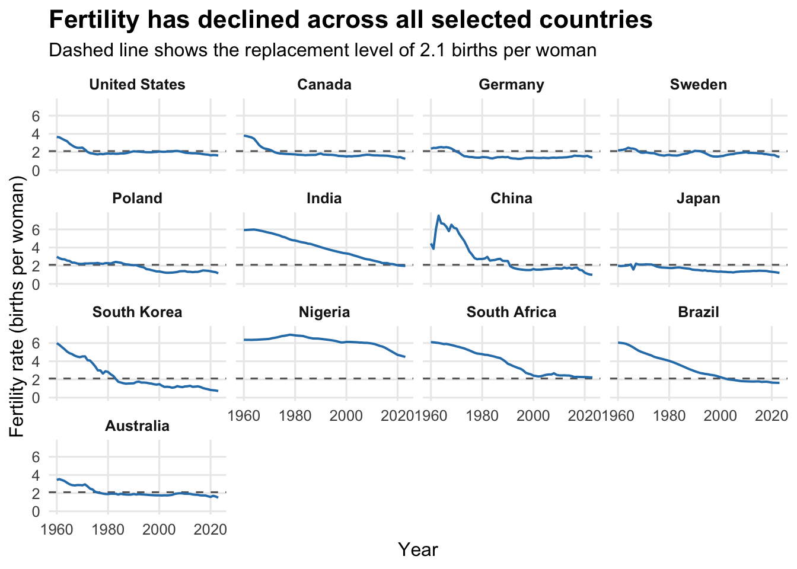
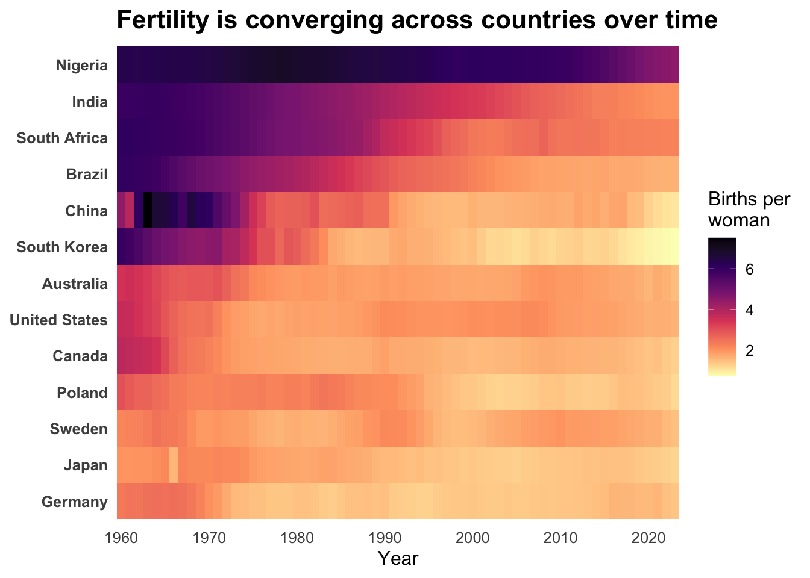
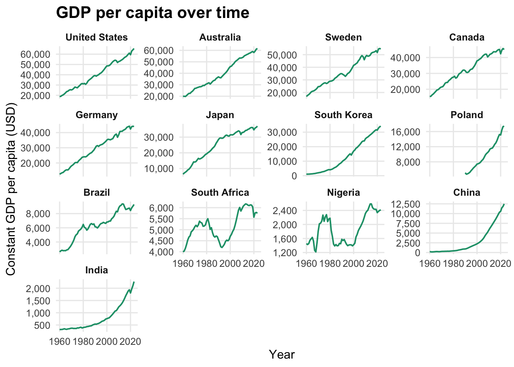
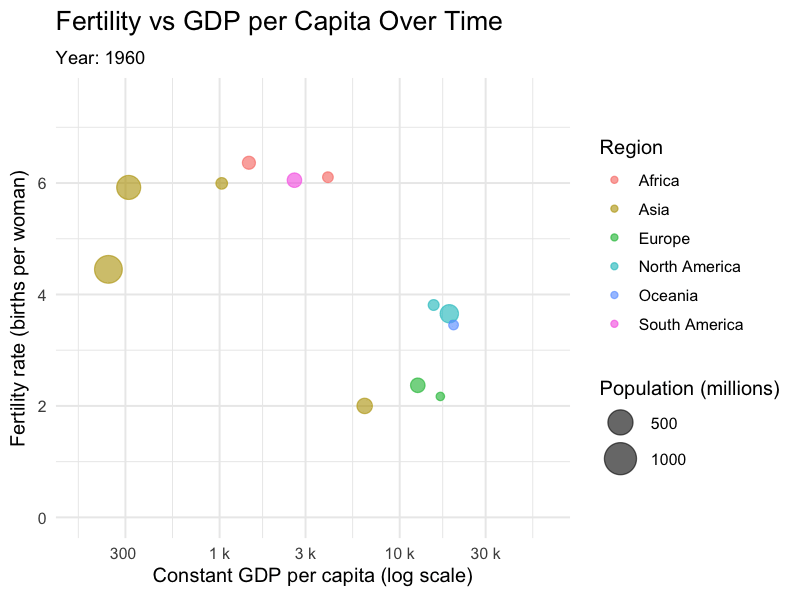
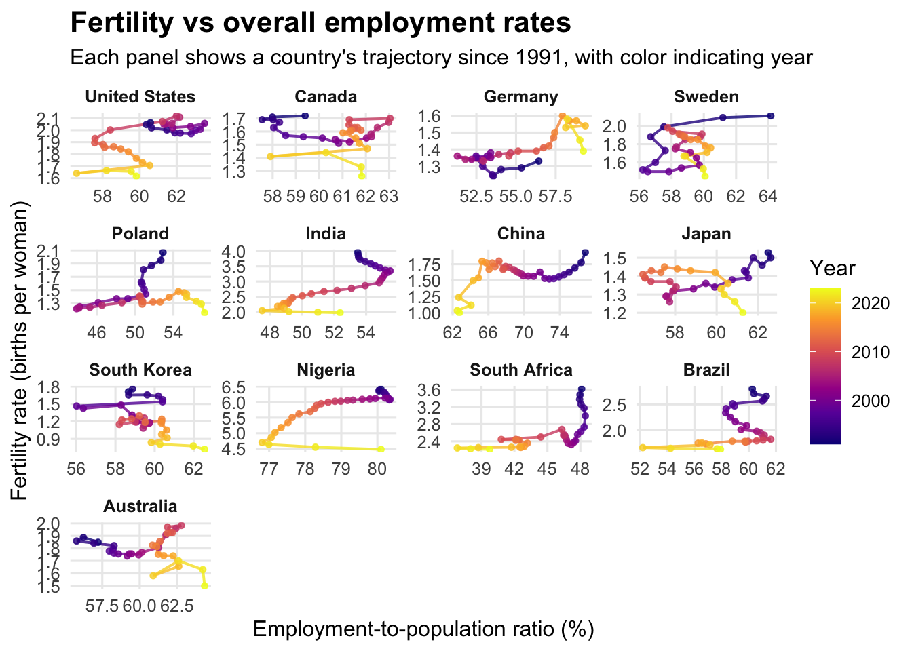
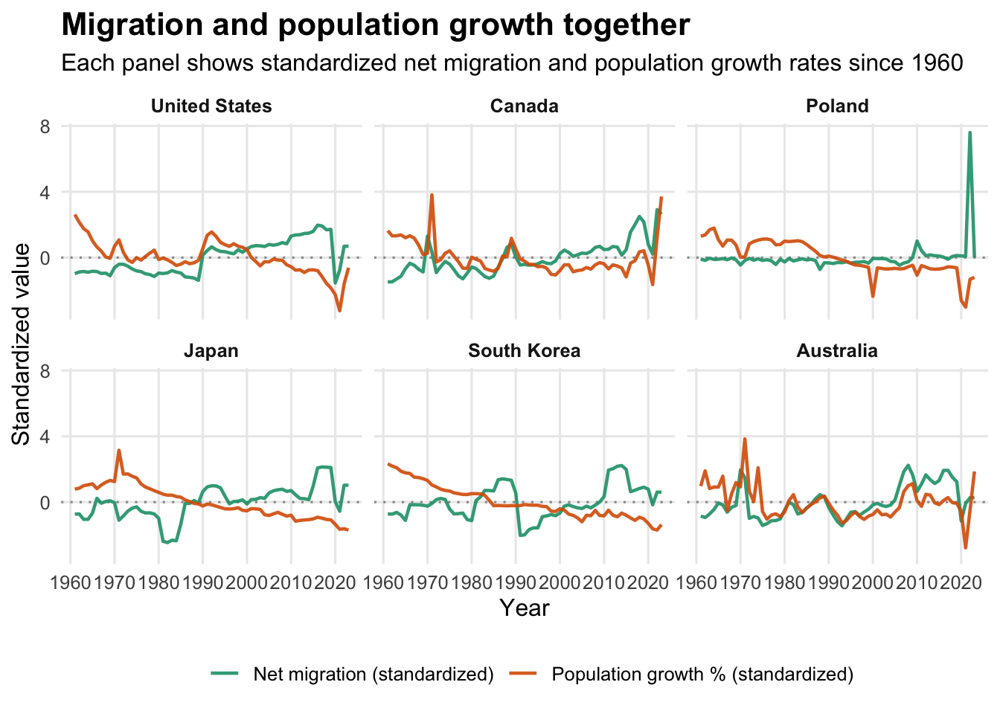
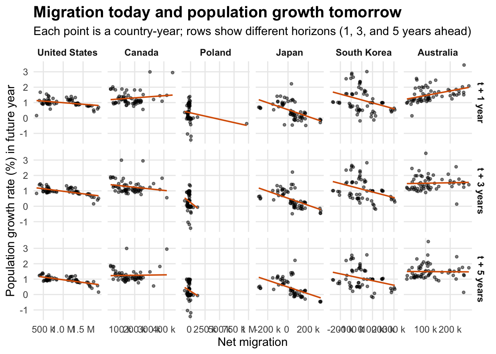
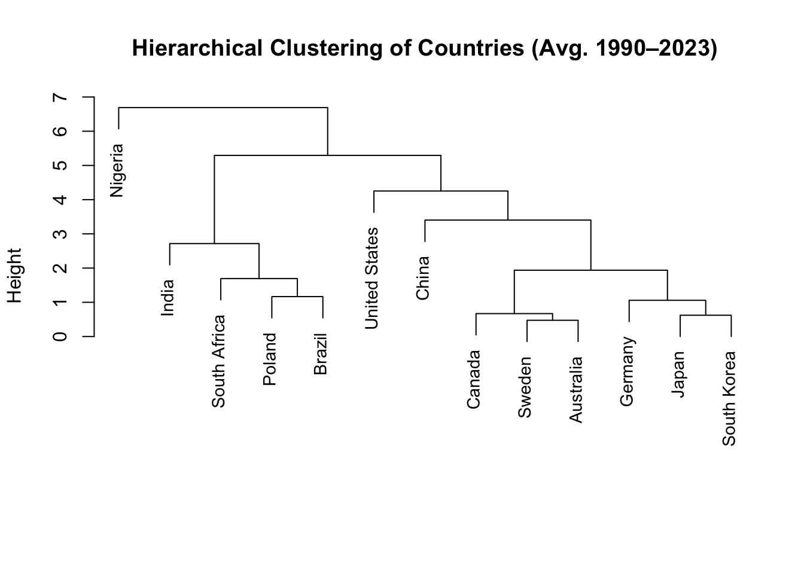

fertility_data <- master_long |>filter( variable =="fertility_rate", year >=1960, year <= end_year ) |>left_join(country_lookup, by ="country")country_order <- fertility_data |>group_by(country_name) |>summarize(avg_fertility =mean(value, na.rm =TRUE)) |>arrange(desc(avg_fertility)) |>pull(country_name)fertility_long <- master_long |>filter( variable =="fertility_rate", year >=1960, year <= end_year ) |>left_join(country_lookup, by ="country") |># use the same ordering as in the heatmapmutate(country_name =factor(country_name, levels = (country_order)) )ggplot(fertility_long, aes(x = year, y = value)) +# replacement linegeom_hline(yintercept =2.1,linetype ="dashed",color ="grey40" ) +geom_line(color ="#2c7fb8", linewidth =0.7) +facet_wrap(~ country_name, ncol =4) +scale_y_continuous("Fertility rate (births per woman)",limits =c(0, NA) ) +scale_x_continuous("Year",breaks =seq(1960, 2020, by =20) ) +theme_minimal(base_size =12) +theme(strip.text =element_text(face ="bold"),plot.title =element_text(face ="bold", size =16),panel.grid.minor =element_blank() ) +labs(title ="Fertility has declined across all selected countries",subtitle ="Dashed line shows the replacement level of 2.1 births per woman" )

Fertility rate trajectories (births per woman) for 13 selected countries. The dashed line marks the replacement level of 2.1 births per woman.
For every country in the analysis, we see a decline in fertility rates between 1960 and 2023. While the change varies across the countries, it is interesting to see that all countries except Japan had fertility levels above the replacement rate - and only Nigeria and South Africa (barely!) managed to sustain fertility levels above 2.1 births per woman. The pattern is strikingly similar for Germany, Japan, Sweden, and Poland, which were just around replacement level 65 years ago, and have fallen much below it ever since. The decline in fertility is quicker in the US and Australia, and even more so across the first 5 countries in the figure above. Out of these, China marks an interesting case: it is the only country that exhibited significant positive growth in fertility rates throughout the 60+ year period. This could stem from several reasons, but the most likely cause seems to be the end of the 1959-1961 Great Chinese Famine. After living conditions stabilized in the country, the citizens were more likely to decide to have children. Because China had not yet implemented fertility-control policies, this rebound appears prominently in the data.
3.1.2 Fertility rate heat map
Code
# compute average fertility over the entire periodfertility_data <- fertility_data |>mutate(country_name =factor(country_name, levels =rev(country_order)) )ggplot(fertility_data, aes(x = year, y = country_name, fill = value)) +geom_tile() +scale_x_continuous("Year",breaks =seq(1960, 2020, by =10),expand =expansion(mult =c(0, 0)) ) +scale_fill_viridis_c(name ="Births per\nwoman",option ="magma",direction =-1 ) +theme_minimal(base_size =12) +theme(panel.grid =element_blank(),axis.title.y =element_blank(),axis.text.y =element_text(face ="bold"),plot.title =element_text(size =16, face ="bold") ) +labs(title ="Fertility is converging across countries over time" )

Fertility rates across countries and years, with countries ordered by average fertility.
In the fertility heat map, we see patterns that converge towards lower fertility, with some interruptions of darker shades. Most notably, Nigeria, which exhibits by far the highest fertility of the 13 countries, is seeing a decline in its fertility. On the other hand, South Korea has been seeing the lowest rates of child birth since the start of the millennium.
3.2 Fertility vs. other indicators
3.2.1 GDP per capita over time
Code
# compute median GDP per capita per country for orderinggdp_order <- master_long |>filter( variable =="gdp_capita_const", year >=1960, year <= end_year ) |>left_join(country_lookup, by ="country") |>group_by(country_name) |>summarize(median_gdp =median(value, na.rm =TRUE)) |>arrange(desc(median_gdp)) |>pull(country_name)# apply orderinggdp_long <- master_long |>filter( variable =="gdp_capita_const", year >=1960, year <= end_year ) |>left_join(country_lookup, by ="country") |>mutate(country_name =factor(country_name, levels = gdp_order))ggplot(gdp_long, aes(x = year, y = value)) +geom_line(color ="#1b9e77", linewidth =0.7) +facet_wrap(~ country_name, ncol =4, scales ="free_y") +scale_y_continuous("Constant GDP per capita (USD)",labels = scales::label_number(accuracy =1, big.mark =",") ) +scale_x_continuous("Year",breaks =seq(1960, 2020, by =20) ) +theme_minimal(base_size =12) +theme(strip.text =element_text(face ="bold"),plot.title =element_text(face ="bold", size =16),panel.grid.minor =element_blank() ) +labs(title ="GDP per capita over time" )

Constant GDP per capita (linear scale) for 13 selected countries.
For all the 13 countries, excluding South Africa and Nigeria, we see continuous GDP per capita growth. The United States, Canada, Sweden, Australia, Germany, and Japan all show steady and sustained income growth over the entire period. South Korea stands out as the strongest “growth miracle,” rising from extremely low income levels in 1960 to high-income status by 2020. Middle-income countries such as Brazil and South Africa show more uneven patterns: periods of growth followed by stagnation or declines, reflecting political and economic instability. Nigeria’s GDP per capita is highly volatile, with several swings, likely caused by oil price cycles and structural instability within the country. Nevertheless, each country has much higher GDP per capita in 2023 than in 1960.
NOTE: We tried to group countries into three GDP tiers and give each tier its own y-scale using ggh4x. Although the method should work in theory, it produced layout glitches (empty panels, misaligned strips, overlapping axes) in our setup. After several failed fixes, we reverted to a simpler, reliable approach: a standard facet plot with countries ordered by median GDP.
3.2.2 Fertility vs GDP per capita
Code
#| label: fert-gdp-facets#| fig-cap: "Relationship between fertility and GDP per capita, one panel per country."fert_gdp <- master_long |>filter( variable %in%c("fertility_rate", "gdp_capita_const"), year >=1960, year <= end_year ) |>select(country, year, variable, value) |> tidyr::pivot_wider(names_from = variable, values_from = value) |>left_join(country_lookup, by ="country") |>filter(!is.na(fertility_rate), !is.na(gdp_capita_const))ggplot(fert_gdp, aes(x = gdp_capita_const, y = fertility_rate)) +geom_point(alpha =0.4, color ="#2c7fb8", size =1) +geom_smooth(method ="loess", se =FALSE, linewidth =0.7, color ="#d95f02") +facet_wrap(~ country_name, scales ="free") +scale_x_log10("Constant GDP per capita (log scale)",labels = scales::label_number(scale_cut = scales::cut_si("")) ) +scale_y_continuous("Fertility rate (births per woman)") +theme_minimal(base_size =12) +theme(strip.text =element_text(face ="bold"),plot.title =element_text(size =16, face ="bold") ) +labs(title ="Fertility declines as GDP per capita rises",subtitle ="Each panel shows a country's trajectory across 1960–2023" )
When plotting Fertility Rates vs GDP per capita, we see constant decline for most countries. This does not necessarily imply causation, as shown by South Africa and Nigeria: the two countries that experienced high volatility exhibit high irregularity in the plotted patterns, showing that quick significant changes in GDP per capita do not go together with similarly swift changes in fertility rates.
Code
# #| label: gapminder-fertility-gdp# #| eval: true# #| message: false# #| warning: false# # library(gganimate)# library(gifski)# library(dplyr)# # gapminder_data <- master_long |># filter(# variable %in% c("fertility_rate", "gdp_capita_const", "total_population"),# year >= 1960,# year <= end_year# ) |># select(country, year, variable, value) |># tidyr::pivot_wider(# names_from = variable,# values_from = value# ) |># left_join(country_lookup, by = "country") |># # keep rows with both fertility & GDP present# filter(!is.na(fertility_rate), !is.na(gdp_capita_const))# # # pull out Nigeria rows (might be 0 if data is missing!)# nigeria_data <- gapminder_data |># filter(country == "Nigeria")# # # base plot# p_gapminder <- ggplot(# gapminder_data,# aes(# x = gdp_capita_const,# y = fertility_rate,# size = total_population / 1e6, # millions# color = region,# group = country# )# ) +# geom_point(alpha = 0.6) +# scale_x_log10(# "Constant GDP per capita (log scale)",# labels = scales::label_number(scale_cut = scales::cut_si(""))# ) +# scale_y_continuous(# "Fertility rate (births per woman)",# limits = c(0, NA)# ) +# scale_size_continuous(# name = "Population (millions)",# range = c(2, 10),# guide = "legend"# ) +# theme_minimal(base_size = 12) +# theme(# legend.position = "right",# plot.title = element_text(size = 16, face = "bold"),# plot.subtitle = element_text(size = 11)# ) +# labs(# title = "Fertility vs GDP per Capita Over Time",# subtitle = "Year: {frame_time}",# color = "Region"# )# # # only add highlight + label if Nigeria actually has data# if (nrow(nigeria_data) > 0) {# p_gapminder <- p_gapminder +# geom_point(# data = nigeria_data,# aes(# x = gdp_capita_const,# y = fertility_rate,# size = total_population / 1e6,# group = country# ),# inherit.aes = FALSE,# shape = 21,# fill = "gold",# color = "black",# stroke = 1.1,# alpha = 0.95,# show.legend = FALSE# ) +# geom_text(# data = nigeria_data,# aes(# x = gdp_capita_const,# y = fertility_rate,# label = "Nigeria",# group = country# ),# inherit.aes = FALSE,# vjust = -1,# fontface = "bold",# show.legend = FALSE# )# }# # p_gapminder <- p_gapminder +# transition_time(year) +# ease_aes("linear")# # # animate and save as GIF# anim <- animate(# p_gapminder,# renderer = gifski_renderer(),# width = 800,# height = 600,# res = 120,# fps = 10,# duration = 12# )# # if (!dir.exists("figs")) dir.create("figs")# anim_save("figs/gapminder_fertility_gdp.gif", animation = anim)
3.2.3 Yearly snapshots of GDP per capita, population, and fertility
 In this animated graph, one can track changes in fertility, GDP per capita, and population over time. Each frame represents one year between 1960 and 2023, and each dot represents one country. As the dot’s size grows, so does the country’s population. As it moves to the right, its GDP per capita rises, and as it moves down, its fertility decreases. For example, the brown dot that jumps up and down at the beginning, then sharply falls towards the bottom is China - as the animations reflects its quick changes in fertility described above. Most countries, particularly European and North American, seem to gravitate towards the bottom right corner (high GDP per capita and low fertility). They also, at least at the start of the animation, grow in size, indicating increasing population. As mentioned above, Nigeria (red dot at the top) stands as the clearest exception.
3.2.4 Fertility vs female labor force participation
Code
fert_flfpr <- master_long |>filter( variable %in%c("fertility_rate", "flfpr"), year >=1990, # FLFPR starts around 1990 year <= end_year ) |>select(country, year, variable, value) |> tidyr::pivot_wider(names_from = variable, values_from = value) |>left_join(country_lookup, by ="country") |>filter(!is.na(fertility_rate), !is.na(flfpr))ggplot( fert_flfpr,aes(x = flfpr,y = fertility_rate,group = country_name )) +geom_path(aes(color = year), linewidth =0.7, alpha =0.8) +geom_point(aes(color = year), size =1.2, alpha =0.8) +scale_color_viridis_c(name ="Year",option ="plasma" ) +facet_wrap(~ country_name, scales ="free") +scale_x_continuous("Female labor force participation rate (%)") +scale_y_continuous("Fertility rate (births per woman)") +theme_minimal(base_size =12) +theme(strip.text =element_text(face ="bold"),plot.title =element_text(size =16, face ="bold"),panel.grid.minor =element_blank() ) +labs(title ="Fertility and female labor force participation",subtitle ="Each panel shows a country's trajectory since 1990, with color indicating year" )
Relationship between fertility and female labor force participation, with time evolution shown by connected points.
When investigating fertility rates against female labor force participation rates (some speculate women tend to give less births the more they work), we cannot see any clear pattern. For example, in China, higher FLFPR coincides with higher fertility, while in Brazil, the opposite is the case. We therefore cannot confirm the hypothesis of female labor force participation having a negative effect on fertility rate.
3.2.5 Fertility vs employment-to-population ratio
Code
fert_emp <- master_long |>filter( variable %in%c("fertility_rate", "emp_to_pop"), year >=1991, # employment-to-pop starts around 1991 year <= end_year ) |>select(country, year, variable, value) |> tidyr::pivot_wider(names_from = variable,values_from = value ) |>left_join(country_lookup, by ="country") |>filter(!is.na(fertility_rate),!is.na(emp_to_pop) )ggplot( fert_emp,aes(x = emp_to_pop,y = fertility_rate,group = country_name )) +geom_path(aes(color = year), linewidth =0.7, alpha =0.8) +geom_point(aes(color = year), size =1.2, alpha =0.8) +scale_color_viridis_c(name ="Year",option ="plasma" ) +facet_wrap(~ country_name, scales ="free") +scale_x_continuous("Employment-to-population ratio (%)") +scale_y_continuous("Fertility rate (births per woman)") +theme_minimal(base_size =12) +theme(strip.text =element_text(face ="bold"),plot.title =element_text(size =16, face ="bold"),panel.grid.minor =element_blank() ) +labs(title ="Fertility vs overall employment rates",subtitle ="Each panel shows a country's trajectory since 1991, with color indicating year" )

Fertility and employment-to-population ratio
As with the FLFPR vs fertility graph, the fertility vs overall employment rate graph does not allow us to draw any sensible conclusions. We therefore cannot speculate, either, that societies where more people work have higher or lower fertility rates.
3.3 Migration, population growth, and fertility
Code
# focus countries (by country code)focus_countries <-c("USA", "CAN", "AUS", "POL", "JPN", "KOR")pop_mig <- master_long |>filter( country %in% focus_countries, variable %in%c("total_population", "net_migration"), year >=1960, year <= end_year ) |>select(country, year, variable, value) |> tidyr::pivot_wider(names_from = variable,values_from = value ) |>arrange(country, year) |>group_by(country) |># population growth % from lagged populationmutate(pop_growth_pct = (total_population - dplyr::lag(total_population)) / dplyr::lag(total_population) *100 ) |>ungroup() |>left_join(country_lookup, by ="country") |>filter(!is.na(pop_growth_pct), !is.na(net_migration))# standardize within each country so we can overlay on one y-axispop_mig_scaled <- pop_mig |>group_by(country_name) |>mutate(mig_scaled =as.numeric(scale(net_migration)),popg_scaled =as.numeric(scale(pop_growth_pct)) ) |>ungroup() |> tidyr::pivot_longer(cols =c(mig_scaled, popg_scaled),names_to ="series",values_to ="value" ) |>mutate(series = dplyr::recode( series,mig_scaled ="Net migration (standardized)",popg_scaled ="Population growth % (standardized)" ) )ggplot(pop_mig_scaled, aes(x = year, y = value, color = series)) +geom_hline(yintercept =0, linetype ="dotted", color ="grey60") +geom_line(linewidth =0.8, alpha =0.9) +facet_wrap(~ country_name, ncol =3) +scale_x_continuous("Year",breaks =seq(1960, 2020, by =10) ) +scale_y_continuous("Standardized value") +scale_color_manual(name ="",values =c("Net migration (standardized)"="#1b9e77","Population growth % (standardized)"="#d95f02" ) ) +theme_minimal(base_size =12) +theme(strip.text =element_text(face ="bold"),plot.title =element_text(size =16, face ="bold"),panel.grid.minor =element_blank(),legend.position ="bottom" ) +labs(title ="Migration and population growth together",subtitle ="Each panel shows standardized net migration and population growth rates since 1960" )

Standardized net migration and population growth over time for six selected countries.
Across immigration-heavy countries like the Canada, and Australia, net migration and population growth tend to move together, suggesting that inflows increasingly offset low fertility. In contrast, Japan and South Korea show little alignment, with low or negative migration accompanying steadily declining population growth. Poland sits in between, with migration swings. The very notable spike in immigration to Poland occurs right at the start of the Russian invasion of Ukraine, during which, Poland received ca. 1 million Ukrainian refugees.
Code
focus_countries <-c("USA", "CAN", "AUS", "POL", "JPN", "KOR")pop_mig_lags <- master_long |>filter( country %in% focus_countries, variable %in%c("total_population", "net_migration"), year >=1960, year <= end_year ) |>select(country, year, variable, value) |> tidyr::pivot_wider(names_from = variable,values_from = value ) |>arrange(country, year) |>group_by(country) |>mutate(pop_growth_pct = (total_population - dplyr::lag(total_population)) / dplyr::lag(total_population) *100 ) |>ungroup() |>left_join(country_lookup, by ="country")# create future population growth for different lagspop_mig_lags_long <- pop_mig_lags |>group_by(country) |>mutate(pop_growth_t1 = dplyr::lead(pop_growth_pct, 1),pop_growth_t3 = dplyr::lead(pop_growth_pct, 3),pop_growth_t5 = dplyr::lead(pop_growth_pct, 5) ) |>ungroup() |>select( country, country_name, year, net_migration, pop_growth_t1, pop_growth_t3, pop_growth_t5 ) |> tidyr::pivot_longer(cols =starts_with("pop_growth_t"),names_to ="lag_label",values_to ="pop_growth_future" ) |>mutate(lag_years = dplyr::recode( lag_label,"pop_growth_t1"="t + 1 year","pop_growth_t3"="t + 3 years","pop_growth_t5"="t + 5 years" ),lag_years =factor( lag_years,levels =c("t + 1 year", "t + 3 years", "t + 5 years") ) ) |>filter(!is.na(net_migration),!is.na(pop_growth_future) )ggplot( pop_mig_lags_long,aes(x = net_migration, y = pop_growth_future)) +geom_point(alpha =0.5, size =1) +geom_smooth(method ="lm", se =FALSE, linewidth =0.7, color ="#d95f02") +facet_grid(lag_years ~ country_name, scales ="free") +scale_x_continuous("Net migration",labels = scales::label_number(scale_cut = scales::cut_si("")) ) +scale_y_continuous("Population growth rate (%) in future year") +theme_minimal(base_size =12) +theme(strip.text =element_text(face ="bold"),plot.title =element_text(size =16, face ="bold"),panel.grid.minor =element_blank() ) +labs(title ="Migration today and population growth tomorrow",subtitle ="Each point is a country-year; rows show different horizons (1, 3, and 5 years ahead)" )

Net migration today vs population growth in 1, 3, and 5 years, for six selected countries.
Across the countries shown, only immigration-heavy economies like Canada and Australia display a clear link between today’s migration levels and population growth in future years, as their trend lines are flat or slightly positive, suggesting that, there, migration meaningfully contributes to demographic expansion. In contrast, Japan, South Korea, and Poland show negative or near-zero relationships: population growth continues to fall regardless of migration because very low fertility and aging dominate overall population change. The broader takeaway is that migration matters only where the migration flows are large relative to the population. In low-migration societies, migration is simply too small to offset structural demographic decline. A final caveat is that these plots compare migration levels with growth rates, which can produce weak or spurious correlations because migration is volatile year-to-year while population growth adjusts slowly over time.
We see that between 1960 and 1990, the strongest correlation between two of the investigated variables is the negative one between GDP per capita and fertility rate - which is not at all surprising, considering the graphs previously created. For most other pairs of variables, we cannot really observe a strong correlation, apart from a slightly positive one, between GDP per capita and net migration. Note: Employment-to-population ratio was not available for most of these years, thus it produces no correlations with other variables.
When investigating the same correlations in the years 1990-2023, we see a few changes. In these years: - The negative correlation between GDP per capita and fertility rate was less pronounced - Conversely, the positive correlation between net migration and GDP per capita is stronger - There is a strong positive correlation between employment-to-population ratio and female labor force participation ratio
Code
# variables to usevars_pca <-c("fertility_rate","gdp_capita_const","flfpr","emp_to_pop","net_migration")# pivot wider and average across 1990–2023pca_data <- master_long |>filter( variable %in% vars_pca, year >=1990, year <= end_year ) |>select(country, year, variable, value) |> tidyr::pivot_wider(names_from = variable, values_from = value) |>left_join(country_lookup, by ="country") |>group_by(country_name, region) |>summarize(across(all_of(vars_pca), ~mean(.x, na.rm =TRUE)), .groups ="drop")library(ggfortify)# PCA on scaled variablespca_model <-prcomp( pca_data |>select(all_of(vars_pca)),scale =TRUE,center =TRUE)# hierarchical clustering on scaled variablesdist_mat <- pca_data |>select(all_of(vars_pca)) |>scale() %>%dist()hc <-hclust(dist_mat, method ="ward.D2")plot( hc,labels = pca_data$country_name,main ="Hierarchical Clustering of Countries (Avg. 1990–2023)",xlab ="",sub ="",cex =0.9)

Based on the investigated variables, since 1990, we can create a dendrogram that groups countries based on their average demographic and economic characteristics since 1990. At the top level, Nigeria stands alone, emphasizing its unique high fertility and low income in the dataset. India, South Africa, Poland, and Brazil form a second group of countries, being the middle-income developing economies, though their fertility rates vary. To the right, USA and China are grouped together (reflecting similar overall averages despite very different trajectories). Finally, Canada, Sweden, Australia, Germany, Japan, and South Korea form the tightest cluster, having advanced economies with very low fertility and strong labor-force attachment. We thus see a very familiar pattern: - High-fertility, lower-income countries group together - Middle-income transitional economies group together - Low-fertility, high-income economies group together NOTE: The method mostly takes into account similarity in averaged levels, not trends, so countries that exhibit similar averages over time (e.g. Japan and South Korea) are grouped tightly even if their historical patterns differ.
South Korea constitutes a very interesting case, fertility-wise. Within 60 years, the country went from a very high fertility of 6 births per woman to a tragic rate below 1. With less than half the replacement rate, it is no surprise that the country’s population growth rate has been steadily falling. With an increase in net migration since the 2010s, we see continuous decrease in population growth, indicating that there is not enough intake of people to offset the ‘dying-off’ of the population. As the case with many other countries, Korea’s economy has been growing quickly. Moreover, it has been seeing a irregular upward trend in terms of its employment-to-population ratio, and the female labor force participation rate.
India only fell below replacement rate in terms of its fertility recently. It has been seeing a steady decrease in this rate since 1960. This, following worldwide trends, is accompanied by rapid economic growth. Despite the recent dip below 2.1 in fertility, the population has still been growing, though at a continuously slower rate. There has not yet been enough time since the fertility rate dropping below replacement rate for the deaths to surpass births and cause a shrinkage in the population. With such a high fertility over time, India has had near-zero net migration, which had minimal effect on its total population. Curiously, labor market trends are volatile, with a significant crash in employment-to-population ratio and female labor force participation rate in the mid-2000s, only showing signs of recovery post-2020.
Poland, with its tumultous post-WWII story, exhibits yet another interesting case. After the fall of the communist regime in 1989, the birth rate that oscillated around 2.2 throughout the 1970s and 1980s fell down to around 1.3 in the span of 10 years. Unsurprisingly, its economy has been growing at a quick pace since then. The labor market trends reveal the transition to a free economy: it did not happen overnight, with many people keeping their jobs from the communist era well into the 90s, with the employment-to-population ratio continuously falling, before a significant rebound and further growth post-2008. Since 1960, Poland has been experiencing negative net migration, though it was stable at around -0.2%. The country is known for not being a common immigration destination, yet we see two spikes in the net migration graph: 2010 (ca. +0.35%), and 2022 - the latter being a result of the intake of Ukrainian refugees. In terms of population growth: Poland has been shrinking since 2000, with a significant decrease in its population around the outbreak of the COVID-19 pandemic.
Out of all the investigated countries, Nigeria is the biggest outlier in terms of its fertility rate. Consistently high, even reaching 7 births per woman in the late 1970s. Despite it decreasing steadily since, it still remains very high, above 4 births per woman. Thus, the population has been growing at a relatively stable rate, between 2 and 3.2% per year. Nigeria is also not regarded a common immigration destination, and it’s net migration levels have oscilated around 0 since 1960, with one significant dip in the 1980s. The country’s economy has had ups and downs since 1960s, only recently reaching the same level it had in the 1970s. Curiously, there has been a significant spike in its employment-to-population ratio and the female labor participation rate this decade.